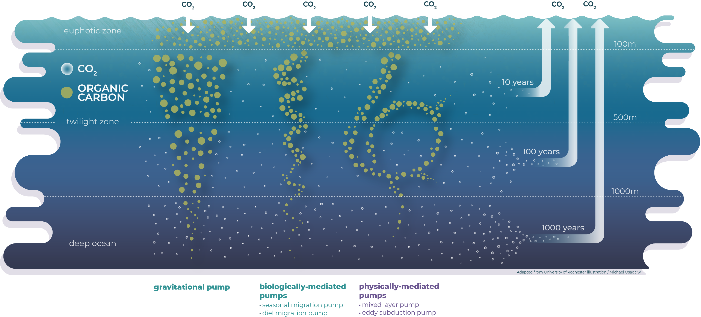

d3 = require("d3@7")
world = FileAttachment("data_converse/countries-110m.json").json()
land = topojson.feature(world, world.objects.land)
<!-- Issue to read the big file from git lfs so hard solution: split the big file into 4 pieces -->
<!-- f100_data = d3.json("data_converse/f100_full.geojson").then(d => d.features.map(f => { -->
<!-- const c = d3.geoCentroid(f); -->
<!-- return {value: f.properties.value, depth: f.properties.depth, longitude: c[0], latitude: c[1]}; -->
<!-- })) -->
f100_data1 = d3.json("data_converse/f100_part1.geojson").then(d => d.features.map(f => {
const c = d3.geoCentroid(f);
return {value: f.properties.value, depth: f.properties.depth, longitude: c[0], latitude: c[1]};
}))
f100_data2 = d3.json("data_converse/f100_part2.geojson").then(d => d.features.map(f => {
const c = d3.geoCentroid(f);
return {value: f.properties.value, depth: f.properties.depth, longitude: c[0], latitude: c[1]};
}))
f100_data3 = d3.json("data_converse/f100_part3.geojson").then(d => d.features.map(f => {
const c = d3.geoCentroid(f);
return {value: f.properties.value, depth: f.properties.depth, longitude: c[0], latitude: c[1]};
}))
f100_data4 = d3.json("data_converse/f100_part4.geojson").then(d => d.features.map(f => {
const c = d3.geoCentroid(f);
return {value: f.properties.value, depth: f.properties.depth, longitude: c[0], latitude: c[1]};
}))
f100_data = [...f100_data1, ...f100_data2, ...f100_data3, ...f100_data4];
viewof max_value1 = Inputs.range([0, 1], {step: 0.05, label: "max colorbar"})
viewof f100_depth = Inputs.select(
[
5, 15, 25, 36, 48, 61, 75, 91,
109, 130, 153, 179, 209, 242,
279, 320, 365, 415, 470, 531,
597, 669, 747, 832, 923, 1022,
1128, 1241, 1363, 1493, 1631,
1778, 1935, 2101, 2277, 2462,
2658, 2865, 3083, 3312, 3552,
3804, 4068, 4345, 4634, 4937,
5253, 5582
],
{label: "depth (m)", value: 531.0}
)
f100_filtered = f100_data.filter(data => data.depth == f100_depth);
Plot.plot({
projection: {type: "equal-earth"},
color: {
scheme: "BuPu",
domain: [0, max_value1],
legend: true,
label: "f100"
},
marks: [
Plot.raster(f100_filtered, {
fill: "value",
width: 180,
height: 91,
x1: -180,
y1: -90,
x2: 180,
y2: 90,
clip: "sphere",
interpolate: "barycentric"
}),
Plot.geo(land, {fill: "currentColor", fillOpacity: 1}),
Plot.sphere(),
]
})In our paper entitled Century-scale carbon sequestration flux throughout the ocean by the biological pump, we estimate that the flux of organic carbon that is sequestered for \(\geq\) 100 years by the biological carbon pump (BCP) is 0.9-2.6 Pg C year\(^{-1}\). This estimation is up to 6 times larger than previous estimates based on the common assumption that sequestration only occurs in the deep ocean (i.e. typically below 1000 m).
Instead, our study is based on the concept of continuous vertical sequestration, that we refer to as CONVERSE, which states that sequestration (for \(\geq\) 100 years) can occur throughout the entire water column.
The present summary simplifies the published paper and makes it more reader-friendly. To do so, some of the text, data and results, which are essential for the primary publication, are not included, and our results are presented in an interactive way. This way our key results should be easy to understand by a broad range of readers.
Keywords to keep in mind
Before going into details, let me define some keywords to understand the main points of our paper.
DIC — dissolved inorganic carbon, composed of \(CO_{2}\), \(H_{2}CO_{3}\), \(HCO_{3}^{-}\) and \(CO_{3}^{2-}\).
Remineralization — respiration of organic matter by organisms which consequently produce biogenic DIC (i.e. DIC\(_{bio}\)).
POC / DOC — particulate / dissolved organic carbon.
Biological carbon pump (BCP) — series of ocean processes through which inorganic carbon is fixed as organic matter by photosynthesis in sunlit surface water and then transported to the ocean interior, and possibly the sediment, resulting in the storage of carbon (IPCC 2019).
Carbon sequestration — it refers to a given time where DIC is hidden from the atmosphere. In our paper, we use the IPCC definition which states that 100 years is a period long enough to consider that this carbon is sequestered (i.e. stored away from the atmosphere).
\(f_{100}\) — it represents the fraction of water at a given location and depth that will remain in the ocean for \(\geq\) 100 years (Siegel et al. 2021). In other words, it represents the fraction of inorganic carbon in a water parcel that will remain hidden from the atmosphere for at least a century.
A taste of \(f_{100}\)
The model of Siegel et al. (2021) returns \(f_{100}\) values in 48 oceanic layers, from the surface down to ~5500 m depth. Using the map below, you can observe the regional disparities of \(f_{100}\) at different depths and highlight regions of interest by saturating the colorbar (\(f_{100}\) ranges between 0 and 1).
It is interesting to note that some regions (e.g. North Indian Ocean, Eastern Pacific, Antarctic margin) have \(f_{100}\) values above 0.5 at already ~500 m, indicating that the carbon sequestration flux would be underestimated in those regions if the traditional approach (i.e. sequestration assumed to occur below a fixed reference depth, typically 1000 m) was used. In contrast, other regions (e.g. North Eastern Atlantic, Antarctic Circumpolar Current) have \(f_{100}\) values below 0.5 at 1000 m. Following traditional metrics, we would therefore overestimate the carbon sequestration flux in those regions.
Using those \(f_{100}\) values, it is therefore possible to compute carbon sequestration fluxes (\(F_{seq}\)). For each water layer of thickness \(\Delta z\), we need to compute the remineralization flux (\(F_{remin}\)), that is the flux of biogenic DIC, and multiply it by the corresponding \(f_{100}\) values to get the sequestration flux of biogenic DIC.
\[ F_{seq}(\Delta z) = F_{remin}(\Delta z) \times f_{100}(\Delta z) \]
Based on that equation, it looks like we only need to compute \(F_{remin}\) and the work is over ! It is of course a little trickier.
A new paradigm for the BCP
If you remember the definition of the BCP, it says […] organic matter […] transported to the ocean interior […]. The carbon flux leaving the euphotic zone (EZ, where there is enough light for photosynthesis to occur) for the ocean interior is referred to as the export flux. The export depth is often set at 100 m but can also be set at the base of the EZ.
Until recently, the transport of organic carbon was solely attributed to the gravitational settling of POC. However, Boyd et al. (2019) revised this assumption by adding new biological and physical mechanisms that inject sinking (i.e. POC) and suspended (i.e. DOC) particles at depth through the action of vertically migrating organisms and physical circulation (see figure below).

The BCP can therefore be seen as the combination of three export pathways:
- The biological gravitational pump (BGP).
- The biologically mediated particle injection pump (migrant pump), which consists in the direct injection of POC below the euphotic zone through the vertical migration of animals (on daily and seasonal time scales).
- The physically mediated particle injection pump (mixing pump), composed of three separate pumps: the mixed layer pump, the eddy subduction pump and the large-scale subduction pump that directly inject DOC below the surface layer (i.e. euphotic zone).
The times indicated in this figure (10, 100 and 1000 years) can be understood as average residence times of carbon in the water column. Indeed, it is shown in our study that some fraction of the carbon exported by the three pathways can be sequestered at all depths throughout the water column, this fraction increasing with depth (see next section).
Continuous vertical sequestration (CONVERSE)
While the figure above correctly illustrates the three export pathways of the BCP, it still represents the old paradigm of sequestration, i.e. it only occurs at depth. However, the depth distribution of global median \(f_{100}\) values shows that \(f_{100}\) increases rapidly from the surface to \(\approx\) 0.6 at 1000 m, and progressively up to 1 at the seafloor, indicating that 100% of remineralized DIC is retained for \(\ge\) 100 years.
As a result of this continuous sequestration by the BCP, we propose the following new conceptual representation of the BCP:

A variety of CONVERSE versions
Thus, to estimate the global sequestration flux by the BCP, we needed to take into account the remineralization flux of each export pathway. For this, we used POC and DOC data derived from the model of DeVries and Weber (2017) as well as POC fluxes obtained from the best known relationship of Martin et al. (1987) — Martin’s Law — which describes (empirically) the attenuation of the sinking POC flux with depth.
\[ F_{z} = F_{z_{export}} \left(\frac{z}{z_{export}}\right)^{-b} \]
where \(F_{z}\), \(z_{export}\) and \(b\) are, respectively, the estimated POC flux at depth \(z\), the depth of the export flux and the remineralization factor.
Using different remineralization factors (fixed, local or regional), data sources, export flux (model data from Henson, Sanders, and Madsen (2012) or DeVries and Weber (2017)) export depths (100 m or base of EZ), we computed 7 distinct CONVERSE versions which are briefly resumed in the following table.
| CONVERSE version | Export depth | Remineralization factor | BGP1 | Mixing pump1 | Migrant pump2 |
|---|---|---|---|---|---|
| C1 | 100 m | 0.86 | Martin's Law | export ratio | derived from POC export |
| C2 | 100 m | variable | Martin's Law | export ratio | derived from POC export |
| C3 | 100 m | regional | Martin's Law | export ratio | derived from POC export |
| C4 | EZ base | - | model data | model data | derived from POC export |
| C5 | 100 m | - | model data | model data | derived from POC export |
| C6 | 100 m | 0.86 | export ratio | export ratio | derived from POC export |
| C7 | 100 m | 0.86 | Martin's Law | derived from POC export | derived from POC export |
| 1 To compare CONVERSE versions using different value of POC export flux, we used a scaling factor that we refer to as the export ratio, which is the ratio of the global POC export flux at 100 m from Henson et al., (2012) to the one from DeVries et al., (2017). | |||||
| 2 For the diel migration pump, we used the POC export at 100 m while we used the POC flux at ~600m for the seasonal migration pump. However, the later is only based on data from the northern North Atlantic hence it is underestimated and will be neglected here. | |||||
A visual tool to compare the 7 versions
If you read our paper (especially the supplementary material), you will quickly notice that we have lots of maps and tables which makes it sometimes difficult to compare the seven versions.
To improve the understanding of what’s going on between all CONVERSE versions, you will find below two little Earth that you can play with to focus on your area of interest.
Available data (without CONVERSE duplicates, see previous table):
- BCP (= BGP + Mixing + Migrant) sequestration fluxes
- BGP, mixing and diel migrant pump sequestration fluxes
- POC export flux at 100 m (two data sources) and at the EZ base
- POC sequestration fluxes at 1000 m (i.e. fixed sequestration reference depth)
CONVERSE in numbers
The previous section highlights regional disparities between CONVERSE versions for each carbon pump. Now, let’s focus on the global water-column sequestration fluxes.
In the figure below, you can compare all CONVERSE versions for the BCP and their export pathways (i.e. BGP, mixing and migrant pumps) as well as the global sinking POC fluxes at 1000 m and 2000 m. We also computed the ratio between the BCP global sequestration fluxes and the global POC fluxes at 1000 m and 2000 m.
Overall, the concept of continuous vertical sequestration for the BCP (therefore including the mixing and migrant pumps), estimates global carbon sequestration fluxes 2-3 or 3-6 times higher than what you would obtain from using a fixed reference sequestration depth at, respectively, 1000 m and 2000 m.
In addition, we estimated that the mixing and migrant pumps together contribute to 21-34% of global sequestration fluxes (11-23% for the mixing and 9-12% for the migrant pump). However, as explained earlier, the migrant pump is underestimated because we only have seasonal migration flux estimates for the northern North Atlantic.
Finally, we computed that fluxes above 1000 and 2000 m accounts, respectively, for 47-68% and 66-88% of global CONVERSE carbon sequestration fluxes, which is substantial.
Conclusion
Carbon sequestration is a concept that you might have heard in the news. It is related to the removal of carbon from interaction with the atmosphere. In this work, we have computed carbon sequestration (\(\geq\) 100 years) fluxes for seven versions of CONVERSE, a framework that computes sequestration on the entire water column (i.e. continuous sequestration). In addition to the BGP, we also added the contribution to carbon sequestration by vertically migrating animals and physical mixing processes, with an estimated contribution of 21-34% to the BCP global sequestration flux, even though they do not transport carbon into the deep ocean.
Finally, our calculations show that the 100-year carbon sequestration flux by the BCP is 2-3 or 3-6 times larger than what would be estimated using a fixed sequestration depth at, respectively, 1000 and 2000 m. Thus, the concept of continuous vertical sequestration should be applied to further studies to take into account the fact that using a fixed sequestration depth misses between 47 and 88% of the global sequestration flux.
References
Boyd, Philip W, Hervé Claustre, Marina Levy, David A Siegel, and Thomas Weber. 2019. “Multi-Faceted Particle Pumps Drive Carbon Sequestration in the Ocean.” Nature 568 (7752): 327–35. https://doi.org/10.1038/s41586-019-1098-2.
DeVries, Tim, and Thomas Weber. 2017. “The Export and Fate of Organic Matter in the Ocean: New Constraints from Combining Satellite and Oceanographic Tracer Observations.” Global Biogeochem. Cycles 31 (3): 535–55. https://doi.org/10.1002/2016gb005551.
Henson, Stephanie A, Richard Sanders, and Esben Madsen. 2012. “Global Patterns in Efficiency of Particulate Organic Carbon Export and Transfer to the Deep Ocean.” Global Biogeochem. Cycles 26 (1). https://doi.org/10.1029/2011gb004099.
IPCC. 2019. “IPCC Special Report on the Ocean and Cryosphere in a Changing Climate.” Edited by H.-O, Pörtner, D.C. Roberts, V. Masson-Delmotte, P. Zhai, M. Tignor, E. Poloczanska, K. Mintenbeck, A. Alegrı́a, M. Nicolai, A. Okem, J. Petzold, B. Rama, N.M. Weyer. Cambridge University Press, Cambridge, UK; New York, NY, USA. https://doi.org/10.1017/9781009157964.
Martin, J H, G A Knauer, D Karl, and W W Broenkow. 1987. “VERTEX: Carbon Cycling in the Northeast Pacific.” Deep Sea Research Part A. Oceanographic Research Papers 34 (2): 267–85. https://doi.org/10.1016/0198-0149(87)90086-0.
Siegel, David A, Tim DeVries, Scott Doney, and Tom Bell. 2021. “Assessing the Sequestration Time Scales of Some Ocean-Based Carbon Dioxide Reduction Strategies.” Environ. Res. Lett., June. https://doi.org/10.1088/1748-9326/ac0be0.